Winky Rough is the roughed variant of Winky Sans (https://github.com/typofactur/winkysans) imitating dried ink on rough paper.
Unlike its counterpart Winky Sans, Winky Rough is not a variable font (yet). Winky Sans is available in seven weights from Light (300) to Black (900).
But be careful! Like flowing ink on paper the forms grows in all directions. While the slim weights might have been written with a fineliner, the black style look like ink blots from a broken pen.
To contribute, see github.com/typofactur/winkyrough.
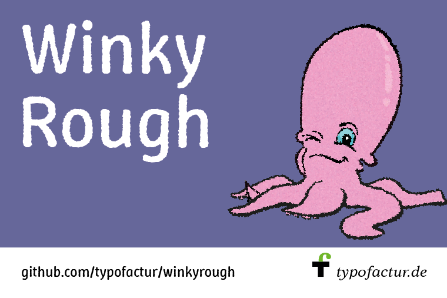 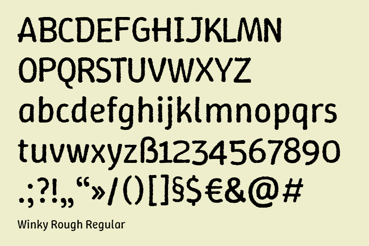 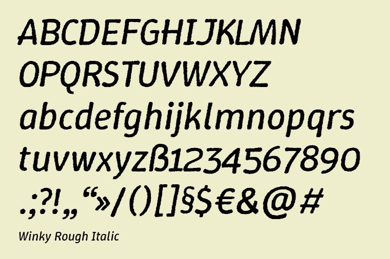 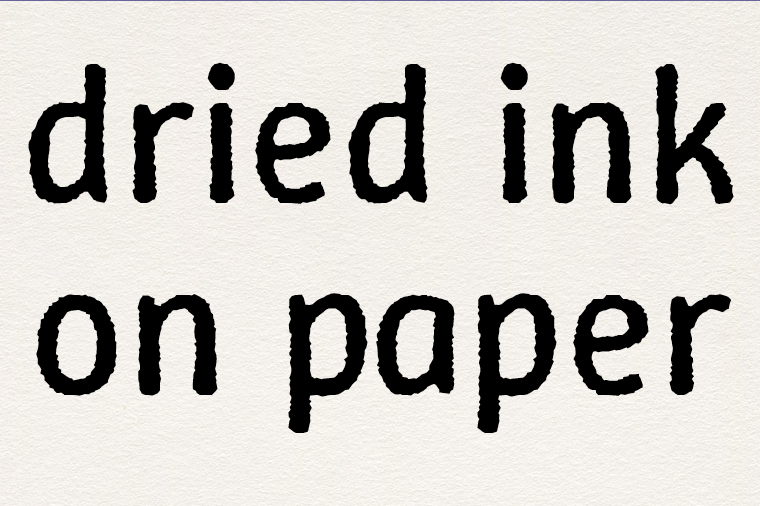
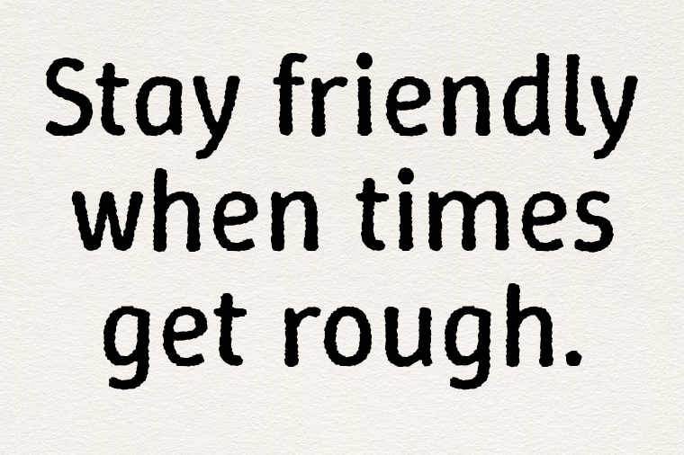
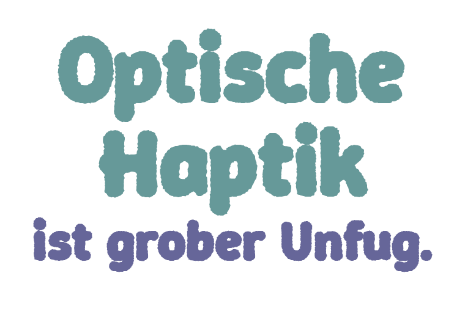
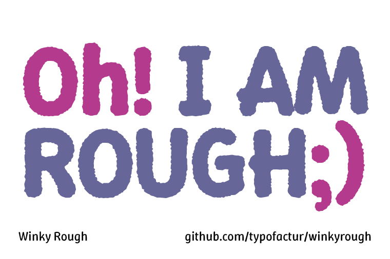
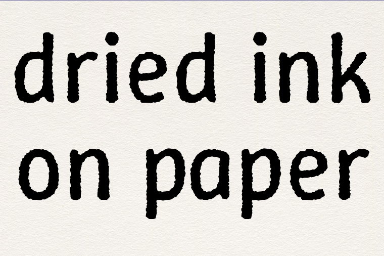
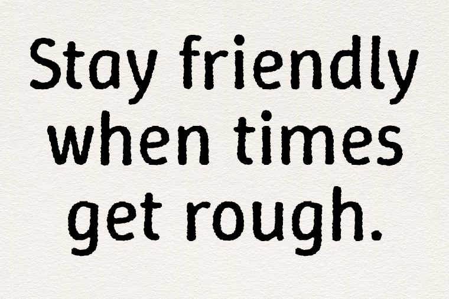
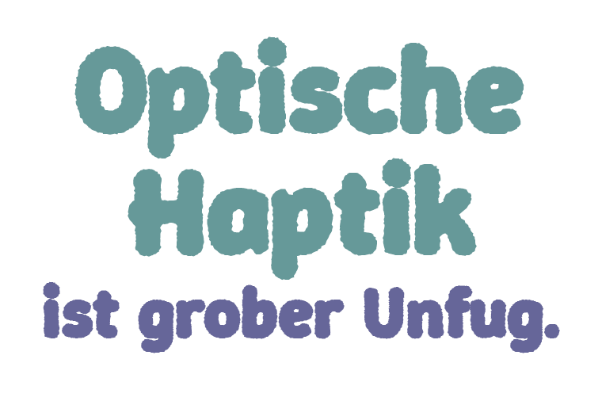
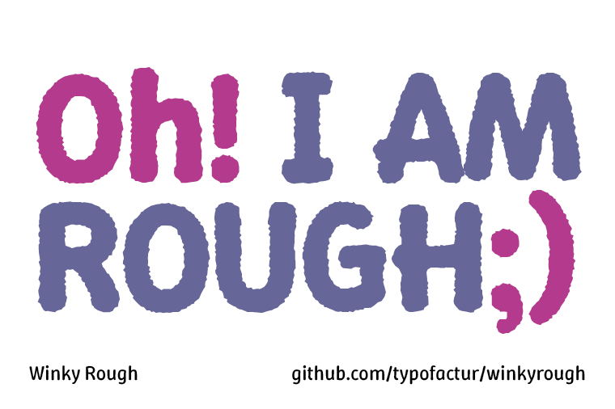